Kafka#
Kafka Architecture#
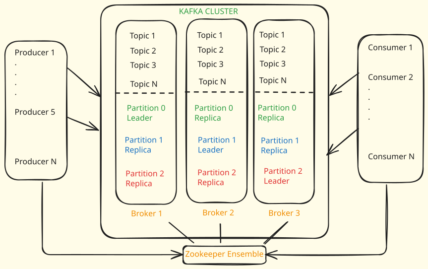
--- Kafka Cluster
A Kafka cluster is a system of multiple interconnected Kafka brokers (servers). These brokers cooperatively handle data distribution and ensure fault tolerance, thereby enabling efficient data processing and reliable storage.
--- Kafka Broker
A Kafka broker is a server in the Apache Kafka distributed system that stores and manages the data (messages). It handles requests from producers to write data, and from consumers to read data. Multiple brokers together form a Kafka cluster.
--- Kafka Zookeeper
Apache ZooKeeper is a service used by Kafka for cluster coordination, failover handling, and metadata management. It keeps Kafka brokers in sync, manages topic and partition information, and aids in broker failure recovery and leader election.
--- Kafka Producer
In Apache Kafka, a producer is an application that sends messages to Kafka topics. It handles message partitioning based on specified keys, serializes data into bytes for storage, and can receive acknowledgments upon successful message delivery. Producers also feature automatic retry mechanisms and error handling capabilities for robust data transmission.
--- Kafka Consumer
A Kafka consumer is an application that reads (or consumes) messages from Kafka topics. It can subscribe to one or more topics, deserializes the received byte data into a usable format, and has the capability to track its offset (the messages it has read) to manage the reading position within each partition. It can also be part of a consumer group to share the workload of reading messages.
Role of Zookeeper in Kafka#
Zookeeper is a critical component used to monitor Kafka clusters and coordinate with them. It stores all the metadata information related to Kafka clusters, including the status of replicas and leaders. This metadata is crucial for configuration information, cluster health, and leader election within the cluster. Zookeeper nodes working together to manage distributed systems are known as a Zookeeper Cluster or Zookeeper Ensemble.
Note
If a Kafka server hosting a partition's leader fails, Zookeeper quickly identifies this and coordinates the election of a new leader from the available replicas, ensuring continuous operation. Zookeeper uses specific parameters and maintains various internal states to manage Kafka.
--- Zookeeper Configuration Concepts
-
initLimit - Defines the time in milliseconds that a Zookeeper follower node can take to initially connect to a leader.
-
syncLimit - Defines the time in milliseconds that a Zookeeper follower can be out of sync with the leader.
-
clientPort - This is the port number (e.g., 2181) where Zookeeper clients connect. It refers to the data directory used to store client node server details.
-
maxClientCnxns - This parameter sets the maximum number of client connections that a single Zookeeper server can handle at once.
-
server.1, server.2, server.3 - These entries define the server IDs and their IP addresses/ports within the Zookeeper ensemble (e.g., server.1: 2888:3888). These are crucial for leader election among the Zookeeper servers.
--- Kafka Partition States (as managed by Zookeeper)
- New Nonexistent Partition - This state indicates that a partition was either never created or was created and then subsequently deleted.
- Nonexistent Partition (after deletion) - This state specifically means the partition was deleted.
- Offline Partition - A partition is in this state when it should have replicas assigned but has no leader elected.
- Online Partition - A partition enters this state when a leader is successfully elected for it. If all leader election processes are successful, the partition transitions from Offline Partition to Online Partition.
--- Kafka Replica States (as managed by Zookeeper)
- New Replica - Replicas are created during topic creation or partition reassignment. In this state, a replica can only receive follower state change requests.
- Online Replica - A replica is considered Online when it is started and has assigned replicas for its partition. In this state, it can either become a leader or become a follower based on state change requests.
- Offline Replica - If a replica dies (becomes unavailable), it moves to this state. This typically happens when the replica is down. -- Nonexistent Replica - If a replica is deleted, it moves into this state.
Partitions#
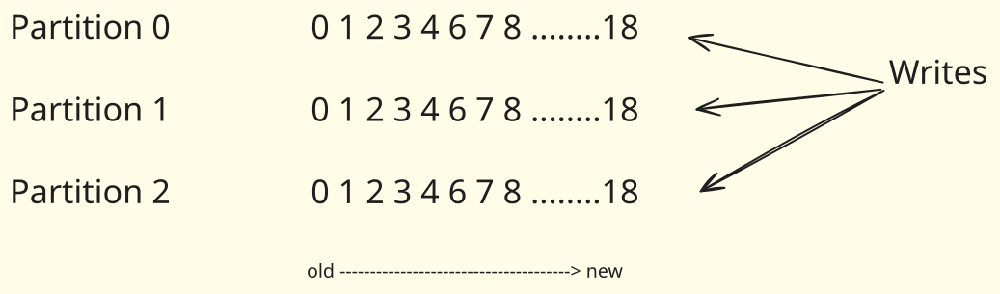
Topics are split into partitions. All messages within a specific partition are ordered and immutable (meaning they cannot be changed after being written). Each message within a partition has a unique ID called an Offset. This offset denotes the message's position within that specific partition.
--- Partitions play a crucial role in Kafka's functionality and scalability
-
Parallelism - Partitions enable parallelism. Since each partition can be placed on a separate machine (broker), a topic can handle an amount of data that exceeds a single server's capacity. This allows producers and consumers to read and write data to a topic concurrently, thus increasing throughput.
-
Ordering - Kafka guarantees that messages within a single partition will be kept in the exact order they were produced. However, if order is important across partitions, additional design considerations are needed.
-
Replication - Partitions of a topic can be replicated across multiple brokers based on the topic's replication factor. This increases data reliability and availability.
-
Failover - In case of a broker failure, the leadership of the partitions owned by that broker will be automatically taken over by another broker, which has the replica of these partitions.
-
Consumer Groups - Each partition can be consumed by one consumer within a consumer group at a time. If more than one consumer is needed to read data from a topic simultaneously, the topic needs to have more than one partition.
-
Offset - Every message in a partition is assigned a unique (per partition) and sequential ID called an offset. Consumers use this offset to keep track of their position in the partition.
--- Kafka Partition Assignment Strategies
When rebalancing happens, Kafka uses specific algorithms to determine how partitions are assigned to consumers.
- Range Partitioner - The Range Partitioner assigns a contiguous "range" of partitions to each consumer. It sorts partitions numerically (e.g., 0, 1, 2, 3, 4, 5).It then divides the total number of partitions by the number of consumers to determine the number of partitions each consumer should handle. A contiguous block of partitions (a "range") is assigned to each consumer.This strategy ensures a relatively uniform distribution of the number of partitions per consumer, though not necessarily the load if data is skewed across partitions.
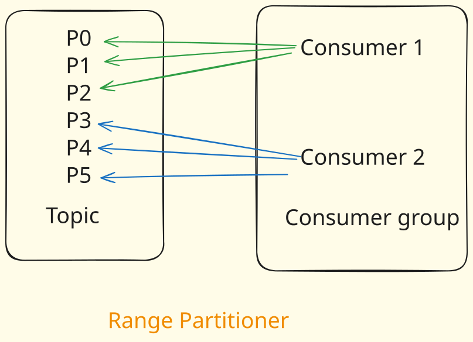
Example
Suppose a topic has 6 partitions (0, 1, 2, 3, 4, 5) and there are 2 consumers in the group. Consumer 1 would be assigned partitions 0, 1, 2 (a range of three partitions). Consumer 2 would be assigned partitions 3, 4, 5 (the next range of three partitions).
- Round Robin Partitioner - The Round Robin Partitioner distributes partitions among consumers in a rotating, round-robin fashion.It iterates through the sorted list of partitions (0, 1, 2, 3, 4, 5).It assigns the first partition to Consumer 1, the second to Consumer 2, the third back to Consumer 1, and so on.
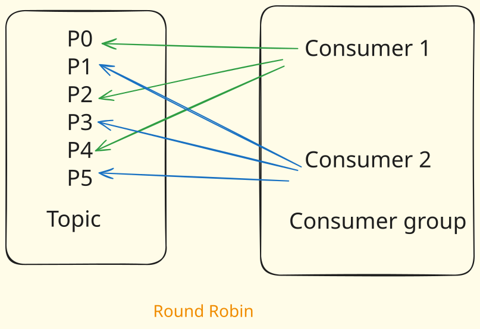
Example
Suppose a topic has 6 partitions (0, 1, 2, 3, 4, 5) and there are 2 consumers in the group. Consumer 1 would be assigned partitions 0, 2, 4. Consumer 2 would be assigned partitions 1, 3, 5.
This strategy aims for a more even distribution of partitions, which can sometimes lead to better load balancing if the message load per partition is relatively uniform.
--- Kafka Cluster & Partition Reassignment
- Kafka Cluster Controller - In a Kafka cluster, one of the brokers is designated as the controller. This controller is responsible for managing the states of partitions and replicas and for performing administrative tasks such as reassigning partitions.
- Partition Growth - It is important to note that the partition count of a Kafka topic can always be increased, but never decreased. This is because reducing partitions could lead to data loss.
- Partition Reassignment Use Cases - Partition reassignment is used in several scenarios. Moving a partition across different brokers. Rebalancing the replicas of a partition to a specific set of brokers. Increasing the replication factor of a topic.
Replications#

Replicas are essentially backups of partitions. They are not directly read as raw data. Their primary purpose is to prevent data loss and provide fault tolerance. If the server hosting an active partition fails, a replica can take over.
One broker is marked leader and other brokers are called followers for a specific partition. This designated broker assumes the role of the leader for the topic partition. On the other hand, any additional broker that keeps track of the leader partition is called a follower and it stores replicated data for that partition.
Tip
Note that the leader receives and serves all incoming messages from producers and serves them to consumers. Followers do not serve read or write requests directly from producers or consumers. Followers just act as backups and can take over as the leader in case the current leader fails.
--- In-Sync Replicas (ISR)
When a partition is replicated across multiple brokers, not all replicas are necessarily in sync with the leader at all times. The in-sync replicas represent the number of replicas that are always up-to-date and synchronized with the partition’s leader. The leader continuously sends messages to the in-sync replicas, and they acknowledge the receipt of those messages.
The recommended value for ISR is always greater than 1.
Tip
The ideal value of ISR is equal to the replication factor.
Offsets#
Offsets represent the position of each message within a partition and are uniquely identifiable, ever-increasing integers . There are three main variations of offsets :
- Log End Offset: This refers to the offset of the last message written to any given partition .
- Current Offset: This is a pointer to the last record that Kafka has already sent to the consumer in the current poll .
- Committed Offset: This indicates the offset of a message that a consumer has successfully consumed .
- Relationship: The committed offset is typically less than the current offset .
In Apache Kafka, consumer offset management – that is, tracking what messages have been consumed – is handled by Kafka itself.
When a consumer in a consumer group reads a message from a partition, it commits the offset of that message back to Kafka. This allows Kafka to keep track of what has been consumed, and what messages should be delivered if a new consumer starts consuming, or an existing consumer restarts.
Earlier versions of Kafka used Apache ZooKeeper for offset tracking, but since version 0.9, Kafka uses an internal topic named "__consumer_offsets" to manage these offsets. This change has helped to improve scalability and durability of consumer offsets.
Kafka maintains two types of offsets:
-
Current Offset: The current offset is a reference to the most recent record that Kafka has already provided to a consumer. As a result of the current offset, the consumer does not receive the same record twice.
-
Committed Offset: The committed offset is a pointer to the last record that a consumer has successfully processed. We work with the committed offset in case of any failure in application or replaying from a certain point in event stream.
--- Committing an offset
-
Auto Commit: By default, the consumer is configured to use an automatic commit policy, which triggers a commit on a periodic interval. This feature is controlled by setting two properties: enable.auto.commit & auto.commit.interval.ms
Although auto-commit is a helpful feature, it may result in duplicate data being processed Let’s have a look at an example. You’ve got some messages in the partition, and you’ve requested your first poll. Because you received ten messages, the consumer raises the current offset to ten. You process these ten messages and initiate a new call in four seconds. Since five seconds have not passed yet, the consumer will not commit the offset. Then again, you’ve got a new batch of records, and rebalancing has been triggered for some reason. The first ten records have already been processed, but nothing has yet been committed. Right? The rebalancing process has begun. As a result, the partition is assigned to a different consumer. Because we don’t have a committed offset, the new partition owner should begin reading from the beginning and process the first ten entries all over again. A manual commit is the solution to this particular situation. As a result, we may turn off auto-commit and manually commit the records after processing them.
-
Manual Commit: With Manual Commits, you take the control in your hands as to what offset you’ll commit and when. You can enable manual commit by setting the enable.auto.commit property to false. There are two ways to implement manual commits :
- Commit Sync: The synchronous commit method is simple and dependable, but it is a blocking mechanism. It will pause your call while it completes a commit process, and if there are any recoverable mistakes, it will retry. Kafka Consumer API provides this as a prebuilt method.
- Commit Async: The request will be sent and the process will continue if you use asynchronous commit. The disadvantage is that commitAsync does not attempt to retry. However, there is a legitimate justification for such behavior. Let’s have a look at an example. Assume you’re attempting to commit an offset as 70. It failed for whatever reason that can be fixed, and you wish to try again in a few seconds. Because this was an asynchronous request, you launched another commit without realizing your prior commit was still waiting. It’s time to commit-100 this time. Commit-100 is successful, however commit-75 is awaiting a retry. Now how would we handle this? Since you don’t want an older offset to be committed. This could cause issues. As a result, they created asynchronous commit to avoid retrying. This behavior, however, is unproblematic since you know that if one commit fails for a reason that can be recovered, the following higher level commit will succeed.
-- What if AsyncCommit failure is non-retryable?
Asynchronous commits can fail for a variety of reasons. For example, the Kafka broker might be temporarily down, the consumer may be considered dead by the group coordinator and kicked out of the group, the committed offset may be larger than the last offset the broker has, and so on.
When the commit fails with a non-retryable error, the commitAsync method doesn't retry the commit, and your application doesn't get a direct notification about it, because it runs in the background. However, you can provide a callback function that gets triggered upon a commit failure or success, which can log the error and you can take appropriate actions based on it.
But keep in mind, even if you handle the error in the callback, the commit has failed and it's not retried, which means the consumer offset hasn't been updated in Kafka. The consumer will continue to consume messages from the failed offset. In such scenarios, manual intervention or alerts might be necessary to identify the root cause and resolve the issue.
On the other hand, synchronous commits (commitSync) will retry indefinitely until the commit succeeds or encounters a non-retryable failure, at which point it throws an exception that your application can catch and handle directly. This is why it's often recommended to have a final synchronous commit when you're done consuming messages.
As a general strategy, it's crucial to monitor your consumers and Kafka infrastructure for such failures and handle them appropriately to ensure smooth data processing and prevent data loss or duplication.
--- When to use SyncCommit vs AsyncCommit?
Choosing between synchronous and asynchronous commit in Apache Kafka largely depends on your application's requirements around data reliability and processing efficiency.
Here are some factors to consider when deciding between synchronous and asynchronous commit:
-
Synchronous commit (commitSync): Use it when data reliability is critical, as it retries indefinitely until successful or a fatal error occurs. However, it can block your consumer, slowing down processing speed.
-
Asynchronous commit (commitAsync): Use it when processing speed is important and some data loss is tolerable. It doesn't block your consumer but doesn't retry upon failures.
Combination: Many applications use commitAsync for regular commits and commitSync before shutting down to ensure the final offset is committed. This approach balances speed and reliability.
--- What is Out-of-Order Commit?
Normally, you might expect offsets to be committed sequentially (e.g., commit for message 1, then 2, then 3, and so on). However, Kafka's design allows for out-of-order commits, meaning a consumer can commit a later offset even if earlier messages in the sequence haven't been explicitly committed.
Consider a Kafka topic with messages 1, 2, 3, 4, 5, 6, etc..
- A consumer polls messages and receives 1, 2, 3, and 4.
- However, for some reason, the consumer only commits the offset for message 4 to the
__consumer_offsettopic. It does not send explicit commits for messages 1, 2, or 3. - Then, the consumer goes down.
When the consumer spins up again, a crucial question arises: Will the Kafka broker re-send messages 1, 2, and 3 (for which no explicit commit was received), or will it start from message 5?
The Kafka broker will not re-send messages 1, 2, or 3.
- The broker simply checks the
__consumer_offsettopic for the latest committed offset for that particular consumer group and topic. - In our scenario, the latest committed offset is for message 4 (which means the next message to read is 5).
- The broker will then start sending messages from message 5 onwards (i.e., 5, 6, 7, etc.).
- Kafka assumes that all messages prior to the latest committed offset have been successfully processed, even if individual commits for those messages were not received. This committed offset acts like a "bookmark".
This behavior is termed "out-of-order commit" because, ideally, commits should be sequential (1, then 2, then 3, then 4). However, in this scenario, a commit for message 4 is received directly, without commits for messages 1, 2, or 3.
--- Advantages of Out-of-Order Commit
The primary advantage of out-of-order commit is reduced overhead.
- Committing an offset for every single message individually can produce a lot of overhead, as it's a complex operation.
- Instead, consumers can consume a batch of messages (e.g., 1, 2, 3, 4).
- After processing the entire batch, the consumer only needs to commit the offset of the last message in that batch (e.g., message 4).
- This way, the entire batch is effectively acknowledged, and the broker will not re-send any messages within that batch, understanding them as successfully processed. This significantly improves efficiency by reducing the number of commit operations.
--- Disadvantages of Out-of-Order Commit
While efficient, out-of-order commit has a significant disadvantage: potential message loss.
- Imagine a scenario where a consumer processes messages using multiple threads or a complex backend system.
- If messages 1, 2, and 3 fail during processing, but message 4 (which was processed by a separate, successful thread) is committed.
- Even though messages 1, 2, and 3 failed, because message 4's offset was committed, the broker will not re-send those failed messages when the consumer restarts.
- This can lead to data loss or inconsistent processing if not handled carefully at the application level.
Kafka Log Segments#
Kafka Log Segments are a powerful mechanism that allows Kafka to efficiently manage and store vast amounts of streaming data. By breaking down large logs into smaller, configurable segments, Kafka ensures high performance, manageability, and robust data retention policies.
All messages published by producers to a Kafka topic are stored within Kafka logs.
These logs are the primary location where messages reside, playing a vital role in enabling communication between producers and consumers via the Kafka cluster.
Traditionally, one might imagine all messages for a topic's partition being stored in a single, ever-growing log file. However, Kafka takes a more efficient approach:
Instead of creating one single, large log file for a particular partition, Kafka creates several smaller files to store all messages. These small, individual files within a partition on a server are called segments.
--- Why Segments?
Imagine a very large book that keeps growing infinitely. If you needed to find a specific page, or if the book became corrupted, managing one massive file would be incredibly difficult and inefficient.
Kafka segments address this by:
- Managing Large Volumes of Data: By breaking down a single massive log into smaller, manageable segments, Kafka can handle terabytes or petabytes of data more effectively.
- Efficient Retention Policies: Older segments can be easily deleted or archived without affecting the active segments where new messages are being appended.
- Improved Recovery: In case of corruption or failure, smaller segments are faster to recover or replicate.
--- How New Segments are Created?
Messages are continuously appended to the currently active log segment in a given partition. Kafka is configured with a maximum size limit for each log segment file. Once the current segment file reaches this configured size (in bytes), Kafka automatically creates a new, empty log segment file for subsequent messages. This ensures that no single log file becomes excessively large.
--- Why Segmentation
Kafka doesn't write all messages into a single, ever-growing log file. This would become unwieldy and inefficient for operations like deletion or replication. Instead, Kafka divides its log files into multiple smaller segments.
This segmentation is controlled by the log.segment.bytes property.
When a log segment reaches a configured size limit (e.g., 2000 bytes as set in a demo), Kafka closes the current segment and starts a new one.
Each segment has its own .log, .index, and .timeindex files.
A key pattern to observe in Kafka's segmented logs is how the files are named.
Each log file, its corresponding .index file, and .timeindex file within a partition directory will share a common name prefix.
This prefix is actually the starting offset of the first message contained within that log segment.
Example
00000000000000000000.log indicates the segment starts from offset 0.
00000000000000000027.log indicates the segment starts from offset 27.
00000000000000000090.log indicates the segment starts from offset 90.
This naming convention is crucial for quickly identifying which segment contains a particular message.
--- How Lookup Works with Multiple Segments
When a consumer requests a message by offset in a multi-segment environment, Kafka follows a three-step process:
- Locate the Segment File (by filename): The Kafka broker first determines which log segment contains the requested offset. It does this by checking the file names in the partition directory. Since file names indicate the starting offset of each segment, the broker can quickly identify the correct
.logfile without opening any files. For example, ifoffset 100is requested, the broker knows it must be in the00000000000000000090.logfile because messages start fromoffset 90in this segment, and the next segment starts fromoffset 109. - Lookup in the Segment's
.indexFile: Once the correct log segment (.logfile) is identified, the broker then goes to its corresponding.indexfile (e.g.,00000000000000000090.index). It performs a binary search within this specific.indexfile to find the nearest offset and its byteposition. - Scan within the Segment's
.logFile: Finally, with the approximate bytepositionfrom the index file, the broker navigates to that position within the actual.logfile and starts scanning from there to find the exact message(s) requested.
This multi-step approach ensures that even with hundreds or thousands of gigabytes of messages, Kafka can locate any message with minimal disk I/O and latency.
--- Dumping and Reading Contents of Log, Index, or TimeIndex Files
This command helps you view the structured content of these binary files.
Note
kafka-run-class.bat kafka.tools.DumpLogSegments --files [path_to_log_file.log] --print-data-log
Example for .log file: kafka-run-class.bat kafka.tools.DumpLogSegments --files C:\kafka\kafka-logs\my-topic-0\00000000000000000000.log --print-data-log
Example for .index file: kafka-run-class.bat kafka.tools.DumpLogSegments --files C:\kafka\kafka-logs\my-topic-0\00000000000000000000.index --print-data-log
Example for .timeindex file: kafka-run-class.bat kafka.tools.DumpLogSegments --files C:\kafka\kafka-logs\my-topic-0\00000000000000000000.timeindex --print-data-log
Producers#
Producers are applications that write or publish data to the topics within a Kafka cluster . They use the Producer API to send data . Producers can choose to write data either at the topic level (letting Kafka distribute it across partitions) or to specific partitions of a topic.
--- Producer Configurations
When configuring a Kafka producer, several important settings are available:
- Bootstrap Servers: Used to connect to the Kafka Cluster. This specifies the host/port for establishing the initial connection.
- Client ID: Used to track requests and is mainly for debugging purposes. Primarily used for server-side logging. -. Key Serializer (and Value Serializer): Converts the key/value into a stream of bytes. Kafka producers send objects as a stream of bytes, and this setting is used to persist and transmit the object across the network.
- Connection Max Idle Ms: Specifies the maximum number of milliseconds for an idle connection. After this period, if the producer sends to the broker, it will use a disconnected connection.
-
Acks (Acknowledgements): Determines the acknowledgement behavior when a producer sends records.
Acks = 0: Producers will not wait for any acknowledgement from the server.
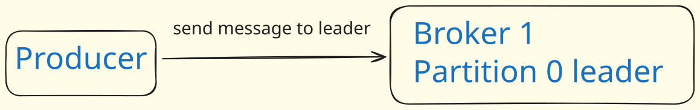
The producer does not wait for any reply from the broker after sending a message. It assumes the message is successfully written immediately.This is the riskiest approach regarding data loss. If the broker goes offline, an exception occurs, or the message is simply not received due to network issues, the producer will not be aware of it, and the message will be lost. Offers the lowest latency because there's no waiting period for acknowledgements.
Acks = 1 (Default): The leader broker will write the record to its local log and respond without waiting for full acknowledgement from all followers. In this case, if the leader fails immediately after acknowledgement (before followers replicate), the record will be lost.
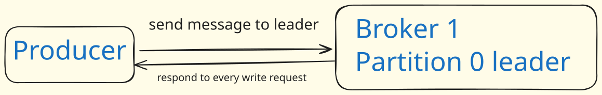
The producer waits for a success response from the broker only when the leader partition has received the message. Once the leader has written the message, it sends an acknowledgment back to the producer, allowing the producer to proceed. Improves data safety compared to
acks=0. If the message cannot be written to the leader (e.g., leader crashes), the producer receives an error and can retry sending the message, thus avoiding potential data loss. While better,acks=1does not guarantee that the message has been replicated to other in-sync replicas. If the leader partition fails after acknowledging the message to the producer but before the message is replicated to its followers, the message could still be lost.Acks = -1: The leader will wait for the full set of in-sync replicas to acknowledge the record. This guarantees that the record will not be lost as long as at least one in-sync replica remains alive. This provides the strongest guarantee and is equivalent to acks=all.
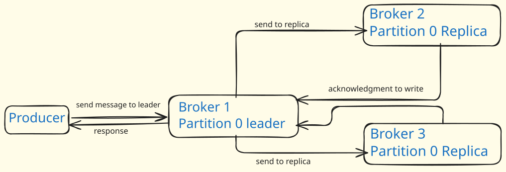
The producer receives a success response from the broker only when the message has been successfully written not only to the leader partition but also to all configured in-sync replicas (ISRs). The leader receives the message and writes it. The leader then sends the message to all its in-sync follower replicas. Once all in-sync replicas confirm they have written the message, they send acknowledgements back to the leader. Only after the leader accumulates acknowledgements from all in-sync replicas, does it send the final success response to the producer. This approach offers the highest level of data safety and guarantees against message loss. The chance of message loss is very low. The primary drawback is added latency. The producer has to wait longer for the message to be fully replicated across all replicas before it gets the final acknowledgment. This makes it a slower process compared to
acks=0oracks=1. -
Compression Type: Used to compress the messages. The default value is "none". Supported types include gzip, snappy, lz4, and zstd. Compression is particularly useful for batches of data, and the efficiency of batching also affects the compression ratio.
-
Max Request Size: Defines the maximum size of a request in bytes. This setting impacts the number of record batches the producer will send in a single request. It is used for sending large requests and also affects the cap on the maximum compressed record batch size .
-
Batching: Producer Batching: The producer collects records together and sends them in a single batch. This approach aims to reduce network latency and CPU load, thereby improving overall performance.
-
Batch Size Configuration: The size of a batch is determined by a configuration parameter called batch.size, with a default value of 16KB. Each partition will contain multiple records within a batch. Importantly, all records within a single batch will be sent to the same topic and partition.
-
linger.ms: This parameter specifies a duration the producer will wait to allow more records to accumulate and be sent together in a batch, further optimizing the sending process. Memory Usage: Configuring larger batches may lead the producer to use more memory. There's also a concept of "pre-allocation" where a specific batch size is anticipated for additional records.
-
Buffer Memory: Producers use buffer memory to facilitate batching records. Records ranging from 1MB to 2MB can be delivered to the server. If the buffer memory becomes full, the producer will block for a duration specified by max.block.ms until memory becomes available. This max.block.ms represents the maximum time the producer will wait. It is crucial to compare this max.block.ms setting with the total memory the producer is configured to use. It's noted that not all producer memory is exclusively used for batching; some additional memory is allocated for compression and insight requests.
--- How Keys Determine Partition Assignment
Kafka uses the message key to decide which partition an incoming message will be written to.
-
With a Key (Hashing Algorithm):
When a key is provided, Kafka applies a hashing algorithm to the key. The output of the hashing function (which is based on the key) is then mapped to a specific partition out of the topic's available partitions.
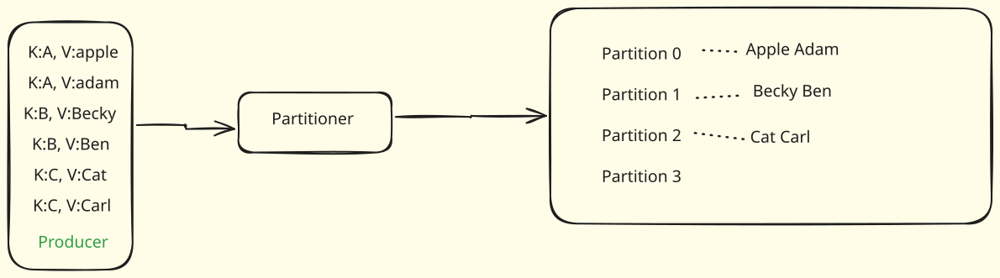
Example
If the hashing concept is "divide by three and use the remainder," a key of
7would result in a remainder of1, so the message would go to partition 1. A key of5would result in a remainder of2, so that message would go to partition 2.All messages that share the same key will always go to the same partition. This is because the same key will consistently produce the same hash output, leading to the same partition assignment. This property is vital for maintaining message order for a specific logical entity (e.g., all events related to a particular user ID).
Tip
It's possible for different keys to end up in the same partition if their hash outputs happen to be the same, but messages with an identical key will always map to the same partition.
-
Without a Key (Null Key - Round Robin):
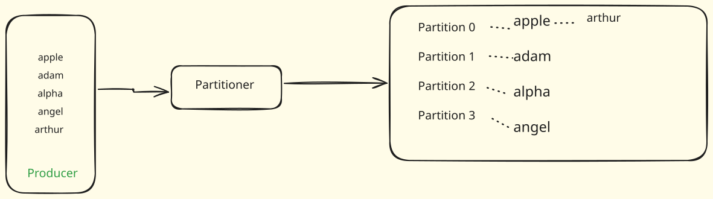
If the message key isnull(i.e., no key is provided), Kafka uses a round-robin fashion to distribute messages among partitions. This means the first message goes to partition 0, the second to partition 1, the third to partition 2, and then it cycles back to partition 0, and so on. This ensures an even distribution of messages when order per key is not a concern.
--- When a producer sends messages in Kafka, the process involves
When an application produces a message using a Kafka API (e.g., Java or Python API), the record goes through a series of internal steps before being sent to the Kafka cluster.
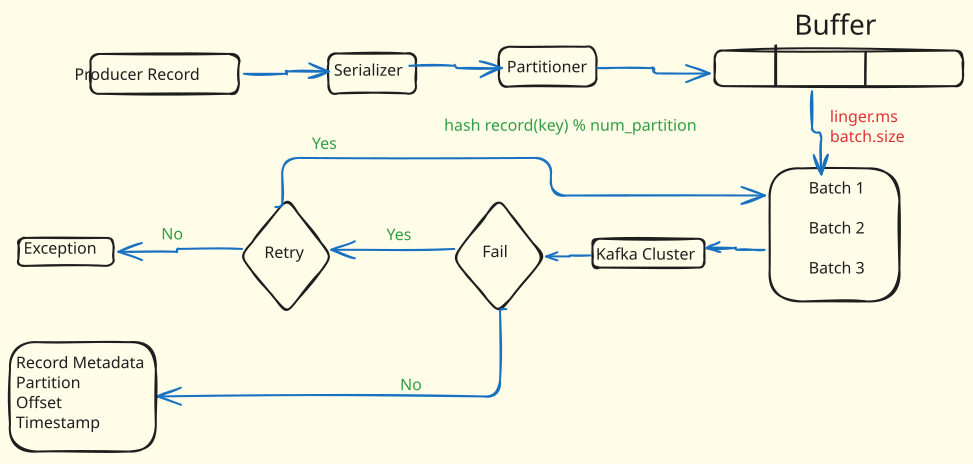
An application sends a "record". A record typically contains a topic (where the record should go), an optional partition (though rarely specified directly by the user), a key, and the value (the actual message content). The key is primarily used for calculating the target partition.
-
Step 1: Serialization
The first thing the producer does is serialization for both the key and value.
Purpose: Messages need to be sent over a network, which requires them to be converted into a binary format (a stream of zeros and ones or a byte array). The serializer handles this conversion from an object (your message data) to a byte array.
-
Step 2: Partitioning
After serialization, the binary data is sent to the partitioner. At this stage, the producer determines to which partition of the topic the record will be sent.
If a key is provided: A hashing algorithm is applied to the key. The output of this hash is then typically divided by the total number of partitions for the topic, and the remainder determines the destination partition. Example: If a key
7is hashed and then processed with "divide by three and use the remainder", it might map to partition1. A key5might map to partition2[based on video explanation in previous context]. The key ensures that messages with the same key consistently go to the same partition. If no key is provided (null key): Messages are distributed in a round-robin fashion across all available partitions, ensuring an even distribution. -
Step 3: Buffering
Once the destination partition for a record is determined, the record is not immediately sent to the Kafka cluster. Instead, it is written into an internal buffer specifically assigned to that partition. Buffers accumulate multiple messages.
This accumulation allows the producer to Perform I/O operations more efficiently. Sending many small messages individually is less efficient than sending them in larger chunks.Apply compression more effectively. Compression algorithms often work better with larger blocks of data, as they can identify more patterns and redundancies. The producer aims to "patch" (batch) records for this efficiency.
-
Step 4: Batching
From the internal buffer, multiple messages are "clubbed" together into batches. These batches are then sent to the Kafka cluster.
Two important configuration parameters control when a batch is sent:
linger.ms: This parameter instructs the producer to wait up to a certain number of milliseconds (e.g., 5 milliseconds) before sending the accumulated content. This allows more messages to collect in the buffer, potentially forming a larger, more efficient batch.batch.size: This parameter defines the maximum size (in bytes) that a batch can reach (e.g., 5 MB).A batch is sent to the Kafka cluster when either the
linger.mstimeout expires OR thebatch.sizelimit is reached, whichever condition is satisfied first. -
Step 5: Sending to Kafka Cluster
Once a batch is formed based on
linger.msorbatch.sizeconditions, the complete batch is sent to the Kafka cluster. -
Step 6: Retries
It's possible for message writing to fail due to networking issues or other problems. Kafka producers can be configured to retry sending a message if the initial attempt fails. You can set the number of retries (e.g.,
retry=5), meaning the producer will attempt to rewrite the message up to five times before throwing an exception. -
Step 7: Receiving Record Metadata
If the message writing is successful (after retries, if any), the Kafka cluster sends
RecordMetadataback to the producing application.This
RecordMetadataprovides crucial information about the successfully written record, including: Partition: The specific partition where the data was written. Offset: The offset (position) of the record within that partition. Timestamp: The time when the record arrived or was written to Kafka.
--- Importance of Understanding Producer Internals
Having a clear understanding of these internal mechanisms is vital for:
-
Troubleshooting: For instance, if messages are being produced at a very high rate and exceeding the producer's internal buffer volume (e.g., 32 MB), messages might not be written to Kafka. Knowing this allows you to increase the buffer volume to accommodate the incoming message flow.
-
Performance Tuning: Properly configuring parameters like
linger.msandbatch.sizecan significantly impact throughput and latency. -
Reliability: Understanding how retries work helps in building resilient applications that can handle transient failures.
--- Producer Corner Cases in Kafka Tuning (Replica Management)
- Replica Fetchers: This setting determines the number of threads responsible for replicating data from leaders. It's crucial to have a sufficient number of replica fetchers to enable complete parallel replication if multiple threads are available.
- replica.fetch.max.bytes: This parameter dictates the maximum amount of data used to fetch from any partition in each fetch request. It is generally beneficial to increase this parameter.
- replica.socket.receive.buffer.bytes: The size of buffers can be increased, especially if more threads are available.
- Creating Replicas: Increasing the level of parallelism allows for data to be written in parallel, which automatically leads to an increase in throughput.
- num.io.threads: This parameter is determined by the amount of disk available in the cluster and directly influences the value for I/O threads .
--- Experiment Scenario
A Kafka producer is configured with default settings, including linger.ms=0 and buffer.memory=32MB (which is sufficient for small messages).
The producer attempts to send 1000 messages (numbered 0 to 999) rapidly in a loop.
The consumer only receives messages up to number 997, and the Kafka logs confirm messages only up to 997 were written. Messages 998 and 999 are lost.
The messages 998 and 999 were still present in the Kafka producer's internal buffer when the Python code finished execution (Process finished with exit code 0). The I/O thread did not get enough time to take these remaining messages from the buffer and publish them to the Kafka cluster before the application terminated.
To ensure all messages are delivered, even when sending rapidly, you must explicitly tell the producer to flush its buffer before exiting or closing the connection. This is done using producer.flush() and producer.close() methods.
producer.flush(): This method explicitly flushes all accumulated messages from the producer's buffer to the Kafka cluster. It blocks until all messages in the buffer have been successfully sent and acknowledged by the brokers.
producer.close(): This method closes the producer connection, releasing any resources it holds. It implicitly calls flush() before closing, but it's often good practice to call flush() explicitly beforehand, especially if there's any risk of the close() method being interrupted.
Handling Producer Failures#
What happens if the I/O thread fails to write a batch to the Kafka cluster? Kafka producers can be configured to retry sending the failed batches.
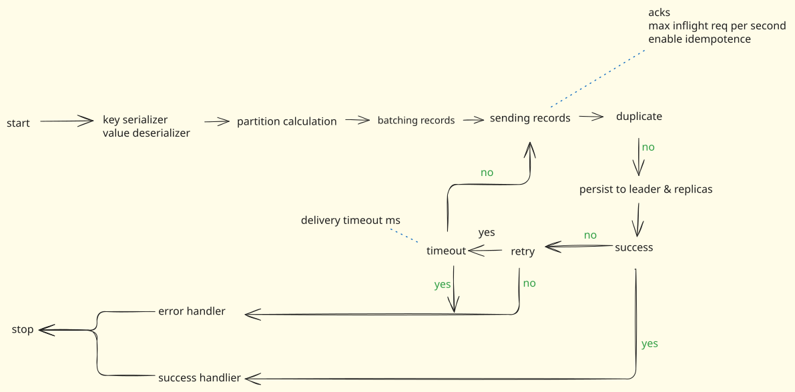
--- Configuring Retries
When creating the producer, you can specify whether to enable retries and for how long Kafka should attempt to rewrite a failed batch.
delivery.timeout.ms: This parameter configures the maximum time (in milliseconds) Kafka will attempt to write a message or retry writing if it fails initially.
--- Error Handling
-
If Retries are Not Enabled - If the initial write fails and retries are disabled, the producer immediately invokes an error handler. On the client side, you will receive an error indicating that the messages were not written successfully. You would then need to handle this manually, perhaps by resending the messages from your application.
-
If Retries are Enabled - Kafka will attempt to retry writing the batch. If the
delivery.timeout.msis exceeded during the retry attempts, the process will again go to the error handler, and an error will be reported to the client. If the timeout is not over, Kafka will continue to retry writing the batch.
--- Ensuring Exactly-Once Semantics: Idempotent Producer
While retries are essential for reliability, they can introduce a new problem: message duplication. An idempotent producer helps solve this.
-
The Duplication Problem
A batch of messages is sent to Kafka. The batch is successfully written to the Kafka cluster. However, the acknowledgement (ACK) or return response from Kafka back to the producer is lost or fails to be sent. The producer, not having received the ACK, assumes the batch failed to write. Consequently, the producer resends the exact same batch of messages to the Kafka cluster. Without idempotence enabled, Kafka would simply write this "new" batch again, leading to duplicate messages in the topic.
-
How Idempotence Works
An idempotent producer prevents this duplication.
enable.idempotence: When this parameter is set totrue(enabled), Kafka performs a duplicate check before writing any incoming batch. Duplicate Detection: If Kafka detects that an incoming batch is a duplicate (meaning it has already been successfully written), it intelligently understands that the producer likely didn't receive the previous acknowledgement. Action for Duplicates: Instead of rewriting the batch and causing duplication, Kafka's cluster will re-send the acknowledgement for that particular batch to the producer. Outcome: The producer receives the ACK, understands the batch was successful, and avoids resending, thus avoiding duplication.To avoid duplicacy in scenarios where ACKs might be lost, you should enable idempotence in your Kafka producer configuration.
--- Maintaining Message Order
Even with retries and idempotence, another issue can arise: out-of-order messages within a single partition.
Kafka guarantees message ordering within a single partition. However, with multiple "in-flight" requests, this guarantee can be compromised during retries:
Consider a scenario where three batches (Batch 1, Batch 2, Batch 3) are sent sequentially to the same partition:
- Batch 1 is sent and successfully written.
- Batch 2 is sent but fails to write initially. A retry operation for Batch 2 is initiated.
- While Batch 2 is undergoing retry (which takes some time), the I/O thread proceeds to send Batch 3, which is then successfully written to the partition before Batch 2's retry completes.
- Finally, Batch 2's retry succeeds, and it is written to the partition.
Actual order of sending: Batch 1, Batch 2, Batch 3. Resulting order in the partition: Batch 1, Batch 3, Batch 2.
This "screws up" the intended message order within the partition, which is generally undesirable for many applications.
-
Understanding
in-flightRequestsAn
in-flight requestrefers to a request that has been sent by the producer but has not yet received a completion response or acknowledgement. Themax.in.flight.requests.per.connectionparameter determines the maximum number of requests that can be "in-flight" (sent but not yet acknowledged) at any given time for a particular connection. If this is set to, say,5, the producer can send up to five requests concurrently without waiting for any of them to complete.Setting
max.in.flight.requests.per.connectionto 1To guarantee strict message ordering within a partition, you can set
max.in.flight.requests.per.connection = 1.By setting this to
1, the producer will send only one batch at a time and wait for its completion (i.e., receipt of the acknowledgement, even after retries) before sending the next batch.If a batch fails and requires a retry, no other batches will be sent to the cluster until that specific batch (and its retries) are fully completed. This ensures that messages are always written in their original sequential order within the partition.
While
max.in.flight.requests.per.connection = 1ensures strict ordering, it comes at a cost:It effectively makes the message writing operation synchronous, meaning throughput will be reduced because the producer waits for each batch to complete before moving to the next. This is a trade-off between strict ordering and high throughput.
--- Ways to send messages to kafka
-
Method 1: Fire and Forget
The "Fire and Forget" method is the simplest way to send messages.
In this technique, the producer sends a message to the Kafka server and does not wait for any acknowledgment or confirmation about its successful arrival. The producer simply "fires" the message and "forgets" about it.
Kafka is a highly reliable system, and Kafka clusters are generally highly available. The producer also automatically retries sending messages if the first attempt fails. Therefore, most of the time (99.9%), messages will arrive successfully.
Imagine sending a letter by mail without requesting a delivery confirmation. You assume it will arrive because the postal service is generally reliable.
Messages are sent immediately without any delay for waiting on responses. You can send a large number of messages in a very short amount of time. If something goes wrong (e.g., the Kafka broker goes down), the producer will not be aware that the messages failed to reach the cluster. These messages will be permanently lost. "The client is not even getting any information that whether really the message is written or not".
-
Method 2: Synchronous Send
The "Synchronous Send" method ensures that the producer receives a confirmation for each message sent before proceeding to the next.
After sending a message, the producer waits for a response (acknowledgment or error) from the Kafka cluster before sending the next message. This makes the entire sending process sequential.
This is like waiting in a queue to get a movie ticket. You cannot get your ticket until the person in front of you has successfully received theirs.
The
producer.send()method returns aFutureobject. By calling the.get()method on thisFutureobject, the producer blocks and waits for the operation to complete. You can specify atimeoutfor how long to wait.If successful, the
get()method returnsRecordMetadatacontaining information like the topic name, partition number, and offset where the message was published. If it fails, an exception is raised.The producer knows whether each message was successfully written or if an error occurred. This allows for robust error handling and logging on the client side.
Very slow. This method makes the overall message sending process significantly slower because each message requires a full "round trip" to the Kafka cluster and back. For example, if the network round-trip time is 10 milliseconds, sending 100 messages would take at least 1 second (100 messages 10 ms/message). "This is kind of making the whole process little bit slow".
-
Method 3: Asynchronous Send (with Callbacks)
The Asynchronous Send method with callbacks offers a middle ground, combining the speed of "Fire and Forget" with the error-handling capabilities of "Synchronous Send".
The producer sends messages rapidly without waiting for an immediate response, similar to "Fire and Forget." However, it attaches callback functions that will be invoked automatically in the background once the message delivery operation (success or failure) is complete.
When
producer.send()is called, it still returns aFutureobject. Instead of calling.get(), you use.add_callback()to register a function to be called on success, and.add_errback()to register a function to be called on failure. These callback functions receive information about the success (e.g.,RecordMetadata) or failure (e.g., exception).Messages are sent very quickly, as the producer does not wait for a response for each message before sending the next. This is "ultra fast" compared to synchronous sending. Despite sending rapidly, the producer is still notified of message delivery status (success or failure) through the callback functions. This overcomes the main drawback of the "Fire and Forget" method. This technique is widely followed in real-world Kafka applications due to its balance of speed and reliability.
-
Choosing the Right Method
Fire and Forget: Use when maximum throughput is critical, and occasional message loss is acceptable or can be handled by downstream systems (e.g., logging, metrics, real-time analytics where exact message counts aren't critical).
Synchronous Send: Use when guaranteed per-message delivery status is paramount, and you can tolerate lower throughput due to the blocking nature. This might be suitable for low-volume, high-value data where immediate confirmation is essential.
Asynchronous Send (with Callbacks): This is generally the most recommended approach for most production scenarios. It offers a good balance of high throughput and reliable error handling, providing notifications without blocking the main sending thread.
--- The Challenge of key=null
When a Kafka producer sends messages to a topic, it typically uses a message key to determine which partition the message should go to. Messages with the same key are guaranteed to land in the same partition, ensuring ordered processing for those related messages.
However, a common scenario arises when no key is provided (the key is null). In this situation, Kafka needs a strategy to distribute these messages across the available partitions. The video discusses how this distribution happens and how Kafka has optimized this process over time.
-
Approach 1: Simple Round-Robin Distribution
The simplest way to distribute messages when
key=nullis using a round-robin fashion.The first message is published to Partition 0 (P0). The second message goes to Partition 1 (P1). The third message goes to Partition 2 (P2), and so on. Once all partitions have received a message, the distribution cycles back to Partition 0.
Example: Let's assume a Kafka topic has 5 partitions (P0, P1, P2, P3, P4) and messages
1, 2, 3, 4, 5, 6are being produced.Message
1goes to P0. Message2goes to P1. Message3goes to P2. Message4goes to P3. Message5goes to P4. Message6goes back to P0.Each individual message is published to a different partition. This constant switching between partitions adds overhead and consumes more time.
The Kafka broker, which is responsible for receiving and storing messages, has to individually send each message to a potentially different partition. This task is CPU-intensive for the broker, which also needs to handle many other important activities. -
Approach 2: Optimized Sticky Partitioning
To overcome the drawbacks of round-robin distribution, Kafka introduced an optimized approach known as Sticky Partitioning. This method focuses on efficiency by leveraging Kafka producer's internal batching mechanism.
When the message
keyisnull, Kafka optimizes distribution by publishing all messages within a particular batch to a single partition.- The producer creates a batch of messages.
- This entire batch is published to one partition (e.g., P0).
- The next batch created by the producer will then be published to the next partition (e.g., P1), and so on, in a round-robin like fashion for the batches, not individual messages.
Example: Using the same 5 partitions (P0, P1, P2, P3, P4) and messages
1, 2, 3, 4, 5, 6. Suppose the producer's internal batching accumulates messages1, 2, 3into the first batch, and4, 5, 6into the second batch.- Batch 1 (
1, 2, 3) goes to P0. - Batch 2 (
4, 5, 6) goes to P1. - The next batch (if any) would go to P2, and so on.
This approach is called "Sticky Partitioning" because the producer/broker "sticks" to one particular partition for an entire batch of messages, rather than switching partitions for individual messages within that batch.
The complete batch is written to one place (a single partition). This reduces the overhead of writing to different locations for individual messages, resulting in faster processing and lower latency. The broker is not constantly computing partition assignments for individual messages. Once a batch is created by the producer, the broker simply publishes that entire batch to a designated partition. This makes the process less CPU-intensive for the broker.
Because of these advantages, sticky partitioning is the approach followed by Kafka's backend nowadays when no key is passed with the messages.
Consumers#
Consumers are applications that read or consume data from the topics using the Consumer API . Consumers can read data from the topic level (accessing all partitions of a topic) or from specific partitions . Consumers are always associated with a consumer group .
A consumer group is a group of related consumers that perform a task . Each message in a partition is consumed by only one consumer within a consumer group, ensuring load balancing and avoiding duplicate processing within that group. Multiple groups can consume the same message.
--- Consumer groups in Apache Kafka have several key advantages
- Load Balancing: Consumer groups allow the messages from a topic's partitions to be divided among multiple consumers in the group. This effectively balances the load and allows for higher throughput.
- Fault Tolerance: If a consumer in a group fails, the partitions it was consuming from are automatically reassigned to other consumers in the group, ensuring no messages are lost or left unprocessed.
- Scalability: You can increase the processing speed by simply adding more consumers to a group. This makes it easy to scale your application according to the workload.
- Parallelism: Since each consumer in a group reads from a unique set of partitions, messages can be processed in parallel, improving the overall speed and efficiency of data processing.
- Ordering Guarantee: Within each partition, messages are consumed in order. As a single partition is consumed by only one consumer in the group, this preserves the order of messages as they were written into the partition.
--- Consumer Configurations
- Key Deserializer: This refers to the deserializer class used for keys, which must implement the org.apache.kafka.common.serialization.Deserializer interface .
- Group ID: A unique string (group.id) identifies the consumer group to which a consumer belongs . This property is essential if the consumer utilizes group management technology, the offset commit API, or a topic-based offset management strategy .
- fetch.min.bytes: This parameter sets the minimum amount of data the server should return for a fetch request . If the available data is less than this threshold, the request will wait for more data to accumulate . This strategy reduces the number of requests to the broker . The request will block until fetch.min.bytes data is available or the fetch.max.wait.ms timeout expires . While this can cause fetches to wait for larger data amounts, it generally improves throughput at the cost of some additional latency .
- Heartbeat Interval: This defines the periodic interval at which heartbeats are sent to the consumer coordinator when using logical group management facilities . Heartbeats serve to ensure the consumer session remains active and facilitate rebalancing when consumers join or leave the group . The value for the heartbeat interval must be less than session.timeout.ms, typically not exceeding one-third of session.timeout.ms . Adjusting this can help control the expected time for normal rebalances .
- session.timeout.ms: This timeout is used to detect client failures within Kafka's group management facility. Clients send periodic heartbeats to signal their liveness. If the session times out, the consumer is removed by the brokers from the group, triggering a rebalance. The value for session.timeout.ms must fall between group.min.session.timeout.ms and group.max.session.timeout.ms.
- max.partition.fetch.bytes: This sets the maximum amount of data the server will return per partition. However, if the very first record batch is larger than this specified size, that first batch will still be returned to ensure continuous progress. The maximum fetch.batch.size accepted by brokers is determined by message.max.bytes.
- Max Bytes: This refers to the maximum amount of data the server should return for a fetch request. Records are filtered in batches by the consumer. Similar to max.partition.fetch.bytes, if the first record batch exceeds this limit, it will still be returned to ensure continuous progress.
--- When a consumer interacts with Kafka to consume messages
- Consumer Poll: The consumer issues a Consumer.poll() request, which may retrieve a certain number of records (e.g., approximately 15 records) .
- Consumer Commit: After processing messages, the consumer calls Consumer.commit() to acknowledge that messages up to a certain offset (e.g., in P1, up to offset 5) have been successfully processed .
After the consumer receives messages from a poll request, a parallel process begins to manage offset commits. Offsets represent the position of the last consumed message in a partition. Committing an offset tells Kafka which messages have been successfully processed by a consumer.
This automatic commit mechanism is controlled by two key properties:
enable.auto.commit:
By default, this property is set to true for Python consumer APIs.
When true, the Kafka consumer will automatically commit offsets at regular intervals.
auto.commit.interval.ms:
This property defines the time interval (in milliseconds) between automatic offset commits.
The default value is 5,000 milliseconds (5 seconds).
The commit timer starts after a polling request is completed and messages are received.
--- How Consumers in Consumer Group read messages?
A single Kafka consumer can read from all partitions of a topic. This is often the case when you have only one consumer in a consumer group.
However, when you have multiple consumers in a consumer group, the partitions of a topic are divided among the consumers. This allows Kafka to distribute the data across the consumers, enabling concurrent data processing and improving overall throughput.
It's also important to note that while a single consumer can read from multiple partitions, a single partition can only be read by one consumer from a specific consumer group at a time. This ensures that the order of the messages in the partition is maintained when being processed.
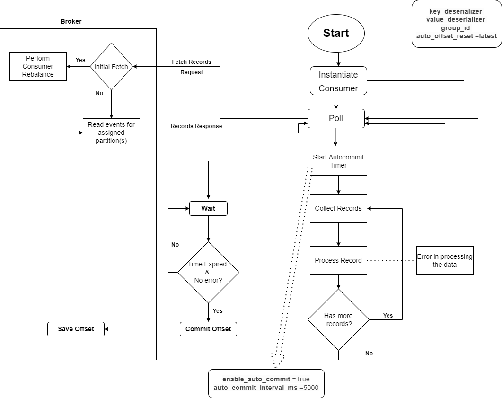
When a poll is complete, a parallel thread starts an "autocommit timer". This thread waits for the auto.commit.interval.ms duration to elapse. Once the configured time is over, the offset is committed to the __consumer_offset topic in Kafka. If an error occurs during message processing before the commit interval is over, the commit is interrupted.
In the main thread, while the auto-commit timer runs in parallel, the consumer processes the messages received from the broker.
The consumer collects all records received in a poll response and begins processing individual messages one by one. This processing can involve various activities, such as writing messages to a database or performing business logic.
Once all messages from a particular poll response are processed successfully, the consumer automatically makes another polling request to fetch the next set of messages. This creates a continuous loop of fetching and processing.
--- Consumer Group
- Consumer Group: A consumer group is a logical entity within the Kafka ecosystem that primarily facilitates parallel processing and scalable message consumption for consumer clients . Every consumer must be associated with a consumer group . There is no duplication of messages among consumers within the same consumer group .
-
Consumer Group Rebalancing: This is the process of re-distributing partitions among the consumers within a consumer group.
Scenarios for Rebalancing: Rebalancing occurs in several situations: A consumer joins the consumer group. A consumer leaves the consumer group. New partitions are added to a topic, making them available for new consumers. Changes in connection states.
-
Group Coordinator: In a Kafka cluster, one of the brokers is assigned the role of group coordinator to manage consumer groups. The group coordinator maintains and manages the list of consumer groups. It initiates a callback to communicate the new partition assignments to all consumers during rebalancing. Important Note: Consumers within a group undergoing rebalancing will be blocked from reading messages until the rebalance process is complete.
- Group Leader: The first consumer to join a consumer group is elected as the Group Leader. The Group Leader maintains a list of active members and selects the assignment strategy. The Group Leader is responsible for executing the rebalance process. Once the new assignment is determined, the Group Leader sends it to the group coordinator.
- Consumer Joining a Group: When a consumer starts: It sends a "Find Coordinator" request to locate the group coordinator for its group. It then initiates the rebalance protocol by sending a "Joining" request. Subsequently, members of the consumer group send a "SyncGroup" request to the coordinator. Each consumer also periodically sends a "Heartbeat" request to the coordinator to keep its session alive.
Rebalancing#
In Apache Kafka, rebalancing refers to the process of redistributing the partitions of topics across all consumers in a consumer group. Rebalancing ensures that all consumers in the group have an equal number of partitions to consume from, thus evenly distributing the load.
--- Rebalancing can be triggered by several events:
- Addition or removal of a consumer: If a new consumer joins a consumer group, or an existing consumer leaves (or crashes), a rebalance is triggered to redistribute the partitions among the available consumers.
- Addition or removal of a topic's partition: If a topic that a consumer group is consuming from has a partition added or removed, a rebalance will be triggered to ensure that the consumers in the group are consuming from the correct partitions.
- Consumer finishes consuming all messages in its partitions: When a consumer has consumed all messages in its current list of partitions and commits the offset back to Kafka, a rebalance can be triggered to assign it new partitions to consume from.
While rebalancing ensures fair partition consumption across consumers, it's important to note that it can also cause some temporary disruption to the consuming process, as consumers may need to stop consuming during the rebalance. To minimize the impact, Kafka allows you to control when and how a consumer commits its offset, so you can ensure it happens at a point that minimizes any disruption from a rebalance.
--- Read strategies in Kafka
In Apache Kafka, the consumer's position is referred to as the "offset". Kafka maintains the record of the current offset at the consumer level and provides control to the consumer to consume records from a position that suits their use case. This ability to control where to start reading records provides flexibility to the consumers. Here are the main reading strategies:
- Read From the Beginning: If a consumer wants to read from the start of a topic, it can do so by setting the consumer property auto.offset.reset to earliest. This strategy is useful for use cases where you want to process all the data in the topic.
- Read From the End (Latest): If a consumer only cares about new messages and doesn't want to read the entire history of a topic, it can start reading from the end. This is done by setting auto.offset.reset to latest.
- Read From a Specific Offset: If a consumer wants to read from a particular offset, it can do so using the seek() method on the KafkaConsumer object. This method changes the position of the consumer to the specified offset.
- Committing and Reading from Committed Offsets: The consumer can commit offsets after it has processed messages. If the consumer dies and then restarts, it can continue processing from where it left off by reading the committed offset.
--- Manual Commit, At most once & Exactly Once
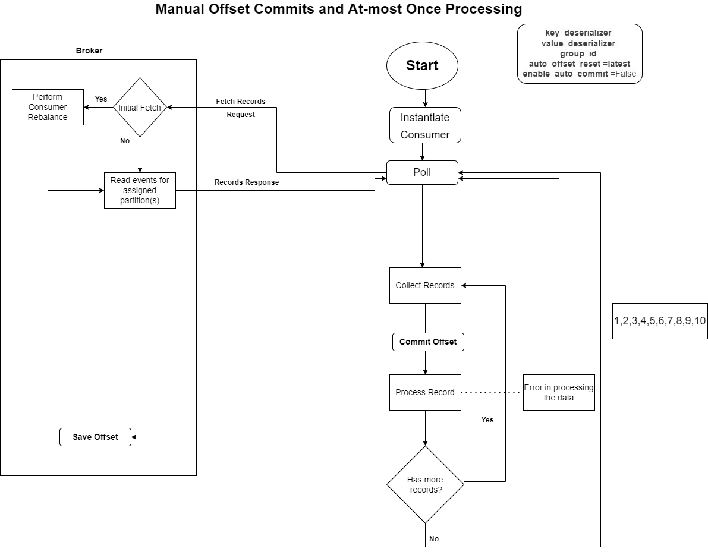
After receiving messages from a poll request, the consumer processes them in a continuous loop, and then explicitly commits its progress.
All records received in the poll response are collected by the consumer.The consumer then picks up and processes each individual record one by one. This processing might involve various operations, such as: Storing data in a database: Persisting the message content into a data store. Performing business logic: Executing specific application functions based on the message. Sending to another service: Forwarding the message to another part of your system.
If there are more records in the collected batch, the consumer loops back to process the next one until all records from that poll response are handled.
Once all the messages received in that particular poll response have been successfully processed, the consumer program explicitly issues a command to commit the offset to the Kafka broker. This action updates Kafka's record of the consumer's progress, marking the messages as processed.
After the successful commit, the consumer then returns to the polling state, making another request for new messages, continuing the infinite loop of fetching, processing, and committing.
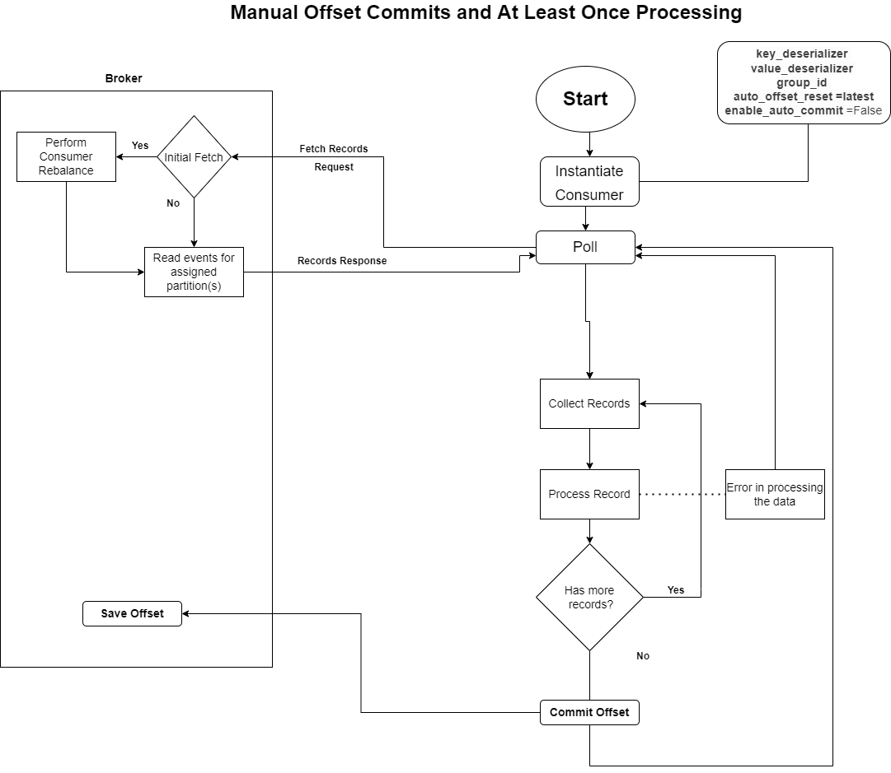
Even with manual offset commits, Kafka's guarantee remains at-least-once processing. This means that a message might be processed more than once, especially if an error occurs before the offset for that message (or batch) is committed.
Consider the following scenario:
- A consumer polls and receives a batch of 10 messages.
- The consumer successfully processes the first 3 messages.
- While attempting to process the 4th message, an error occurs (e.g., a database connection drops, or invalid data is encountered).
- Immediate Interruption: As soon as the error occurs, the processing flow is interrupted, and the consumer immediately reverts back to the poll step.
- No Offset Commit: Since not all 10 messages were successfully processed (specifically, the 4th message failed) and the manual commit step for the entire batch had not yet been reached, no offset was committed for the first 3 messages either.
- Reprocessing: When the consumer polls again, Kafka will send messages from the last committed offset. Since the offset for the previous batch was never committed, Kafka will re-send the same set of 10 messages.
- Consequently, the first 3 messages, which were already processed in the previous attempt, will be reprocessed.
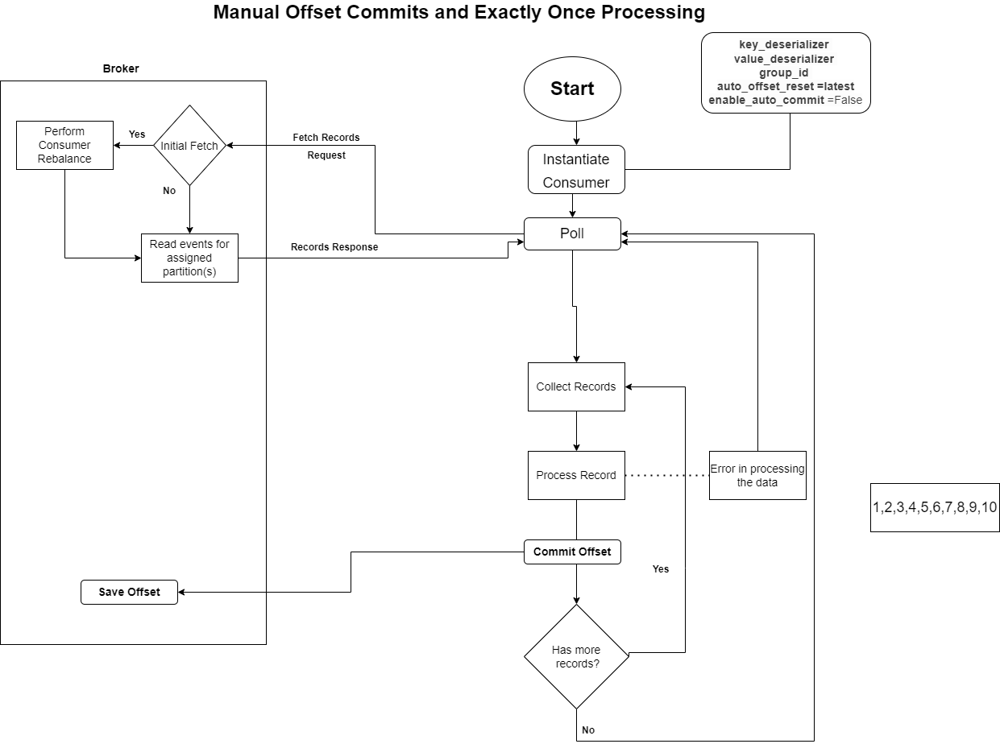
After receiving messages from a poll request, the consumer processes them in a continuous loop. The key to the "exactly-once" strategy demonstrated is the immediate commitment of the offset after processing each single message.
The consumer iterates through each message object received from the consumer.poll() call (often simplified to for message in consumer:).
Important details like message.value, message.key, message.topic, message.partition, message.offset, and message.timestamp can be extracted from each message object.
The consumer then performs its application logic (e.g., storing data in a database, executing business logic) using the message's content. The print statements in the demo code are considered the "processing engine" for this example.
As soon as a single message is successfully processed, the consumer program explicitly issues a command to commit the offset to the Kafka broker. This is the core mechanism ensuring that if the consumer crashes after processing a message but before a batch commit, that specific message won't be reprocessed.
The consumer.commit() Method: This method takes a dictionary where keys are TopicPartition objects and values are OffsetAndMetadata objects.
TopicPartition: Identifies the specific topic and partition. It's constructed using message.topic and message.partition.
OffsetAndMetadata: Contains the offset to commit and optional metadata.
Offset Value: The offset value provided for commit is current_message_offset + 1. This is because Kafka interprets a committed offset X as meaning messages up to X-1 have been successfully processed, and the next message to send should be X.
Metadata: You can pass additional metadata (e.g., message.timestamp).
After successfully processing and committing the offset for a single message, the consumer continues the loop, ready to process the next message in the fetched batch or poll for new messages if the batch is exhausted.
This approach of committing after each message significantly reduces the window for reprocessing, making it align with the "exactly-once" claim by the source. If the consumer crashes after processing a message but before its specific offset is committed, that message could be re-processed. However, with per-message commits, this window is minimized to the time it takes to process and commit one message.
--- Why the One-Consumer-Per-Partition Rule?
The central question addressed is: Why does Kafka not allow multiple consumers to consume messages from the same partition simultaneously?. This restriction is in place to prevent several critical issues related to data integrity and efficient processing.
-
Problem 1: Load Balancing and Message Reprocessing
The primary reason for introducing consumer groups was to achieve load balancing and accelerate message processing. However, if multiple consumers were allowed to consume from the same partition, this goal would be undermined.
Consider a scenario where a topic has a partition, say Partition 3, which contains messages arranged in segments with offsets (unique identifiers for messages within a partition).
Suppose Consumer 4 and Consumer 5 are both consuming from Partition 3.
- Consumer 4 processes messages from
offset 0tooffset 4096. Consumer 4 knows it has consumed up tooffset 4096and expects to pull fromoffset 4097next time. - However, Consumer 5, running in parallel, does not know what Consumer 4 has already processed. Consumer 5 might also attempt to consume messages starting from
offset 0. - Result: Both Consumer 4 and Consumer 5 would end up processing the same range of messages (
offset 0tooffset 4096).
This leads to reprocessing of the same messages multiple times, which is not genuine parallel processing or load balancing. True parallel processing involves different workers handling different parts of a larger task, not the same part repeatedly. The consumer group concept was designed for multiple consumers to process different chunks of messages.
- Consumer 4 processes messages from
-
Problem 2: Violation of Message Order Guarantees
Kafka guarantees message ordering only within a single partition. This means that messages sent to a specific partition will always be processed by consumers in the order they were written, based on their offsets. This guarantee is crucial for many applications, especially those where the sequence of events is vital.
Consider a banking domain example:
- A customer first adds money to their account (Event A) and then withdraws money (Event B).
- It's essential that the addition of money is processed before the deduction to maintain correct account balance and display the correct sequence of events in the application.
- To ensure all events related to a specific account go to the same partition, a common strategy is to use hashing based on the account number (e.g.,
account_number % total_partitions). This ensures that if Event A goes to Partition 2, Event B (for the same account) will also go to Partition 2, and Event B will have a higher offset than Event A.
The Issue if multiple consumers were allowed on one partition:
- Suppose Consumer 4 and Consumer 5 are both consuming from the same partition, and you somehow try to split the offset ranges (e.g., one consumes one range, the other consumes another).
- If they consume messages in parallel, the order of execution cannot be guaranteed.
- Consumer 5 might process the "deduction of money" event first, update the database, and display it in the front-end application. Simultaneously, Consumer 4 might process the "addition of money" event later.
- Consequence: This would result in a poor customer experience, as the transactions would not be displayed in the order they occurred. Kafka's design prevents this violation of crucial message ordering.
Therefore, even if the reprocessing issue were somehow overcome by splitting offset ranges, the critical guarantee of message ordering within a partition would be lost if multiple consumers processed it concurrently.
Index & Timeindex#
When you set up a Kafka cluster, all the Kafka and ZooKeeper logs are stored in a dedicated kafka-logs folder. Within this folder, each topic and its partitions have their own directories.
For instance, a topic named my-topic with one partition (partition 0) will have a folder named my-topic-0.
Inside these partition-specific folders, Kafka stores all its messages in log files. These messages are appended sequentially to the log files, meaning new messages are always added to the end. This append-only design is fundamental to Kafka's performance.
However, alongside these main log files (often with a .log extension), you'll notice other files with .index and .timeindex extensions. These are not where the actual message data resides, but they play a critical role in making message retrieval highly efficient.
--- The Challenge of Large Log Files
Imagine a scenario where a Kafka log file grows to be enormously large as more and more messages are produced. If a consumer requests messages starting from a specific offset (e.g., offset 1500), the Kafka broker would have to scan the entire log file from the beginning until it finds the requested offset. This full-file scanning is highly inefficient, especially with high message throughput and retention. It's analogous to searching for a specific record in a traditional database without any indexes – you'd have to read every single row until you find what you're looking for. To avoid such inefficiencies, databases use indexing. Kafka implements a similar concept for its log files.
--- The Role of
.indexFiles (Offset Index)
The .index files are Kafka's solution to the large log file scanning problem. Their primary purpose is to help the Kafka broker quickly find the exact position (byte offset) of a message for a given offset within a log file.
An .index file contains a mapping of offset to position (byte offset) within the corresponding .log file.
Example
Content of an .index file:
This indicates that the message with offset 831 is located at byte position 17165 in the actual log file.
How it Works
- When a consumer requests messages from a specific offset (e.g.,
offset 1500). - The Kafka broker first consults the
.indexfile. - Since the offsets in the index file are stored in sorted (ascending) order, the broker can perform a binary search on the offset values.
- This binary search quickly identifies the range where the requested offset should be. For
offset 1500, the broker would find that it falls betweenoffset 1480andoffset 1587. -
Knowing the byte
positionforoffset 1480(which is30165), the broker knows it only needs to scan the actual log file from that approximate position onwards, drastically reducing the search area instead of starting from the beginning of the file. -
Configuration:
log.index.interval.bytesKafka doesn't write an entry into the.indexfile for every single message. Instead, it writes entries periodically based on the accumulated data size.
The default configuration property that controls this behavior is log.index.interval.bytes. Its default value is 4096 bytes. This means that roughly every 4096 bytes of new data accumulated in the Kafka topic, a new offset and its corresponding position will be written to the .index file.
--- Relative Offsets for Efficiency
To save space and improve efficiency, the .index file stores relative offsets instead of absolute offsets.
Every log segment (which we'll discuss next) has a base offset – the starting offset of messages within that segment.
In the .index file, the offsets are stored as the difference (or "shift") from this base offset.
For example, if a segment starts at offset 90 and a message has an absolute offset of 108, the index file would store 18 (108 - 90) as the offset value.
When the broker performs a lookup, it adds this relative offset to the segment's base offset to get the actual absolute offset.
However, when you use tools like kafka-run-class.bat to inspect an index file, the tool performs this calculation in the backend and displays the absolute offsets for readability.
--- The Role of
.timeindexFiles (Time Index)
Purpose and Structure:
The .timeindex files complement the .index files by allowing Kafka to efficiently locate messages based on their timestamp. This is particularly useful for business requirements where consumers need messages published after a certain point in time.
A .timeindex file contains a mapping of timestamp to offset.
Example Content of a .timeindex file:
How it Works
- When a consumer requests messages published after a specific timestamp.
- The broker consults the
.timeindexfile. - Similar to the offset index, timestamps in the
.timeindexare sorted, allowing for a binary search to quickly find the approximate offset corresponding to the requested timestamp. - Once an approximate offset is found from the
.timeindex(e.g.,offset 925for a timestamp). - The broker then uses this offset to perform a lookup in the
.indexfile (offset index). - The
.indexfile provides the exact byte position in the log file where that offset begins. - Finally, the broker starts scanning the actual log file from that byte position, checking the message timestamps (which are part of the message payload) to ensure they meet the time requirement.
Unclear Leader Election & TradeOff#
--- The Scenario: Leader Broker Failure and Data Loss Risk
Consider a situation where you have a topic partition P2 with replicas on Broker 1, Broker 2, and Broker 3. Suppose Broker 3 holds the leader for P2, and Broker 1 and Broker 2 hold its followers. Initially, all three are in-sync (ISR: 3, 2, 1).
If the leader broker (Broker 3) goes down, a new leader must be chosen from the remaining in-sync replicas. For example, Broker 2 might be elected as the new leader. At this point, the ISR would only include the active, in-sync replicas (e.g., ISR: 2, 1), as the original leader's broker is down.
Now, let's say the new leader (Broker 2) receives Message 3 from a producer, but before Message 3 can be fully replicated to the remaining follower (Broker 1), Broker 2 also goes down.
At this point:
Message 3 was written to Broker 2's partition.
Broker 2 is now down, making Message 3 inaccessible via its original location.
Broker 1 is still up, but it only has Message 1 and Message 2, not Message 3 because replication was incomplete.
There is currently no in-sync replica that holds all the latest data, including Message 3. This is where the trade-off comes in.
--- The Trade-Off: Availability vs. Durability
When there are no in-sync replicas available for a partition, Kafka faces a critical decision:
-
Prioritize Durability (No Data Loss)
The partition
P2becomes unavailable, and producers cannot publish new messages to it. Data loss is prevented because the system waits for the original leader or a lagging replica to come back online and fully synchronize before accepting new writes. The system is highly durable (reliable) but potentially less available. -
Prioritize Availability (Potential Data Loss)
A partition that is not fully in-sync (e.g.,
Broker 1's partitionP2, which is missingMessage 3) is chosen as the new leader. Producers can then immediately start publishing new messages (Message 4,Message 5, etc.) to this new leader.Message 3is permanently lost because it was only present on the now-downBroker 2and never fully replicated toBroker 1. The system is highly available (continuous operation) but potentially less durable due to data loss.This choice is controlled by a Kafka configuration property:
unclean.leader.election.enable.
--- unclean.leader.election.enable Configuration
This crucial Kafka property determines which of the two options (durability or availability) Kafka will prioritize during a leader failure when no in-sync replicas are available.
-
unclean.leader.election.enable = true
Allows Kafka to elect a replica that is not in-sync (i.e., it's "unclean" because it doesn't have all the latest data) as the new leader. Keeps the system highly available. Producers can continue writing immediately. There might be some amount of data loss (as seen with
Message 3in our example).Suitable for scenarios where a small amount of data loss is acceptable, such as: Log aggregation ,Metrics calculation
-
unclean.leader.election.enable = false
Prevents a replica that is not in-sync from becoming the leader. The system will wait until an in-sync replica becomes available or the original leader recovers and synchronizes. Ensures the system is highly durable, meaning no data will be lost.
The partition will be unavailable for a period, blocking producers from publishing messages until an in-sync leader is established.
Essential for scenarios where data loss is absolutely unacceptable, such as: Transaction-related information in banking or financial sectors. Any system where monetary transactions are involved